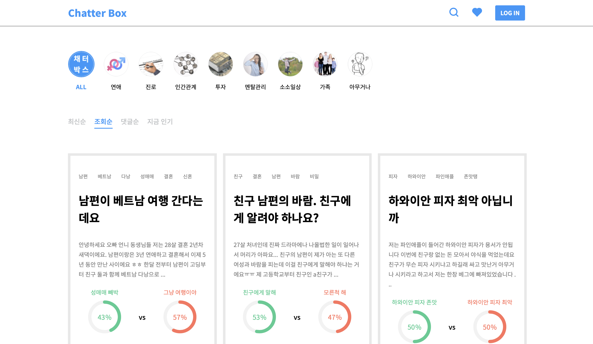
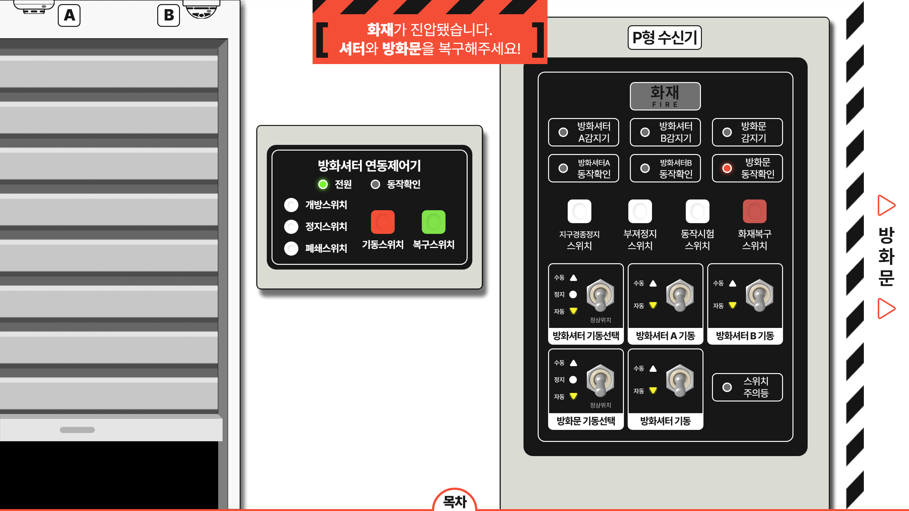

조선일보 주요 프로젝트
2019.03 ~ 2021.03
- 01 CMS 시스템 이전 지원(프론트엔드)
- 02 인터렉티브 웹페이지 제작
01 CMS 시스템 이전 지원(프론트엔드)
-
기간:
2019.12 ~ 2021.02
-
배경:
노후화되고 제한적인 현재 CMS(Contents Management System)를 개선하기 위해
워싱턴포스트 사의 CMS, 'ARC'를 도입하여 사내 전체 시스템을 이전하는 프로젝트 - 담당 업무: 워싱턴포스트 사에서 구현한 기능 커스터마이징, 추가 기능 개발
- 기여도: 25%
- 사용언어: React, HTML, CSS, JS
01 CMS 시스템 이전 지원(프론트엔드)
배경 및 요구사항
- 30여년 전 개발된 기존 CMS 시스템 노후화로 유지보수 및 신규기능 추가 어려움
- 기존의 자체 인프라와 서버에서 AWS & 워싱턴포스트 ARC 도입 결정
- 조선닷컴 디자인에 맞춰 기본 ARC 기능 커스터마이징, 신규기능 개발
- JIRA, Confluence, Slack 등 업무 방식 맞춰 워싱턴포스트 개발자들과 협업 진행
- 원활한 협업이 가능하도록 도서 및 강의로 사내 React 교육 진행(퍼블리싱 팀)
- 리액트 컴포넌트: 피쳐, 업무: 티켓 단위로 작업 진행, 위클리 스크럼으로 회고
- 티켓에 따라 브랜치로 작업, dev, prod 서버 분리하여 이중 dev 서버 관리
ARC CMS 시스템(기사 작성을 위한 Composer) 예시
01 CMS 시스템 이전 지원(프론트엔드)
주요 구현 내용
조선닷컴 리소스 최적화, 광고 컴포넌트 수정
GIF 이슈로 index page 리스소 400~600MB, 업로드 용량 제한 후에도 70MB 수준으로 과다한 AWS 비용 문제 발생
Lazyload 도입 및 백엔드 개발자분과 SSR에서 index.html, script 최적화 작업 진행(기여도 40%)
이미지 업로드 시 동작하는 resizer 수정하여 최초 load 부하 감소, 사용하지 않는 비율 제거
html head 영역 meta 태그 커스터마이징, Google Search Console 발견된 오류 수정
-
iframe 및 외부 js 차단하는 ARC 정책에 따라 데이블, 타불라 등 일부 광고가 표시되지 않는 이슈 발생
google ads만 표시하던 기존 방식에서 PC, Mobile, 메인, 기사면에 따라 분기하여 다르게 표시하도록 작업
Google AMP에서 전용 js만 동작하는 이슈로 인해 표시되지 않던 광고 표시되도록 AMP 분기, js 별도 로드 작업
구글 AMP, 네이버 뉴스스탠드, 기존 조선닷컴 연동
메인 및 기사면 페이지 AMP에서 동작하도록 GNB, 관련된 기사 등 js 사용하는 영역 amp-script로 동작하도록 수정
네이버 뉴스스탠드에 올라갈 수 있도록 기존 기사 컴포넌트에서 js 제거, 필요한 css만 추출하여 삽입
오늘의 지면보기 등 기존 조선일보 서버와 연결이 필요한 기능 axios 활용하여 구현
01 CMS 시스템 이전 지원(프론트엔드)
상세 구현 내용
GNB, LNB, Search, Auth 프론트엔드 개발
PC, Mobile, Scroll에 따라 분기하여 GNB, LNB 컴포넌트 구현

Navbar에 검색 컴포넌트 삽입, 검색창, 검색옵션, 검색결과 컴포넌트 구현
Navbar에 Auth 상태에 따라 다르게 표시, Auth 화면 구현(마이페이지 등 총 기여도 40%)
Mobile팀이 구현 중인 WebView에서 Auth 확인할 수 있도록 User object 정보 지원
관계사의 최신기사를 보여주는 콘텐츠 판 기능 LNB와 Index Page 최하단에 구현
조선닷컴 프론트엔드 개발
메인 영역, 주제 영역 등 페이지 전체 디자인 커스터마이징 반영
기사 TTS Poly 컴포넌트 구현 및 인터렉션 시 서버 요청하여 소요 최소화
기사면 control bar 작업, 사이트 전체 노티피케이션 개발 및 공유
메인 영역 주식 정보, 기사 및 이벤트 Carousel 작업
02 인터렉티브 웹페이지 제작
-
기간:
2019.01 ~ 2020.11
-
배경:
조선일보 '아무튼, 주말' 팀에서 월 1회, 인터렉티브 특집 기사 제작을 기획
2019년 1월 프리랜서로 참여, 이후 정식 입사를 제의받아 7월에 입사하여 유사업무 진행 - 담당 업무: 반응형 인터렉티브 웹페이지 퍼블리싱
- 기여도: 100%
- 사용언어: HTML, CSS, JS
02 인터렉티브 웹페이지 제작
상세 구현 내용
[조선비즈 창간 10주년 기획] 다시 쓰다 도시 3.0
주요 요구사항
전체 디자인과 웹페이지를 먼저 준비하여 오픈하고 취재 후 기사가 나오면 상세 디자인을 구현하여 정해진 시간에 오픈
주요 요구사항: 특집 페이지를 하나의 html이 아닌 8개의 기사를 묶어서 보여주는 웹서비스처럼 느껴지도록 구현
구현 결과
상세페이지의 모든 구성요소를 json 형태로 설계하여 기사가 나오면 바로 저장할 수 있도록 계획
최적화를 위해 빈 페이지에 url 파라미터를 통해 key 값만 입력하면 내용을 삽입할 수 있도록 구현
조선비즈 창간 10주년 특집으로 메인 최상단에 게시되었으며, 특집 팀 모두 사내 3급표창 수상
[조선비즈 창간 10주년 기획] 다시 쓰다 도시 3.0
02 인터렉티브 웹페이지 제작
상세 구현 내용
피어나다 탄소섬유, 효성
주요 요구사항
탄소섬유에 대한 설명 부분을 다양한 인터렉티브 요소로 강조하여 표시
PPT로 슬라이드쇼 하듯 구현하되 배경은 패럴렉스 스크롤처럼 유지
구현 결과
3페이지와 4페이지의 탄소섬유 설명 부분을 클릭 시 모달로 표시하여 인터렉션 요소 추가
특히 4페이지의 경우 가로 스크롤을 통해 전체를 보고나서 넘어갈 수 있도록 구현
2019년 조선비즈 브랜드 수상에 맞춰 대상을 수상한 효성에 대한 특집페이지 제공
피어나다 탄소섬유, 효성
02 인터렉티브 웹페이지 제작
상세 구현 내용
[아무튼, 주말] 알아보자 알쓸맛돈
디자인 요소들 스크롤에 반응하여 인터렉션하도록 작업
품종 영역 강조하여 카드 플립, 전체모달 등 인터렉션 삽입
관련 기사, 내가 100살까지 살 확률은?
기사면 내부에 iframe 형식으로 테스트 페이지 삽입
사용자가 입력하면 csv 데이터를 통해 계산한 결과를 차트로 표시
결과: https://www.chosun.com/national/2020/10/13/OWSZ2YVDXBFV3MXZJKMPPY263U/
설레밤 사내 프로젝트
2016.12 ~ 2019.02
- 01 웹서비스 채터박스, 풀스택 개발
- 02 웹서비스 Jarvif, 프론트엔드 개발
01 웹서비스 채터박스, 풀스택 개발
-
기간:
2018.08 ~ 2019.02
-
배경:
사내 프로젝트로 '익명 찬반 커뮤니티, 채터박스' 풀스택 개발
- 담당 업무: AWS & Django & React 풀스택 개발
- 기여도: 100%
- 사용언어: Django, HTML, CSS, JS, React
01 웹서비스 채터박스, 풀스택 개발
상세 구현 내용
커뮤니티 사이트로 기본적인 Auth, CRUD, SNS 공유 및 스크랩, 검색 기능 제공
사용자는 궁금한 주제로 찬반 투표가 가능한 게시글을 작성할 수 있으며, 댓글로 찬성과 반대의 입장에서 의견을 개진하고, 대댓글로 상대 의견에 반박할 수 있음

디자인 인력이 없어 일단 내부 테스트가 가능하도록 기능만 먼저 구현함
테스트를 위해 주변 인원에게 서비스 안내, 100여명 정도의 인원에게 테스트받음
02 웹서비스 Jarvif, 프론트엔드 개발
-
기간:
2015.09
-
배경:
비전공자를 대상으로 한 웹 개발 교육 멋쟁이사자처럼 3기 해커톤 출품작
- 담당 업무: 웹서비스 프론트엔드 개발
- 기여도: 40%
- 사용언어: Ruby on Rails, HTML, CSS, JS
웹서비스 Jarvif, 프론트엔드 개발
상세 구현 내용
OOP에서 착안하여 근육을 객체로 운동을 기록하는 피트니스 앱
사용자는 운동하기 전 근육을 클릭하여 원하는 운동을 담을 수 있음
운동 후 완료 버튼을 누르면 해당 근육의 색이 진해지며 시각적인 재미를 주고 대시보드에서 나의 운동 현황과 패턴에 대한 데이터를 얻을 수 있음
주요 개인작업
2022.03 ~ 2022.12
- 01 CMS Dashboard 화면구현
- 02 인터렉티브 교육자료 제작
01 CMS Dashboard 화면구현
-
기간:
2022.06 ~ 2022.08
-
배경:
웹 서비스의 프론트엔드를 Vue.js로 개발 중이었으나 일정을 맞추기 어려워
차후에 Vue.js로 전환하고 병렬 작업으로 먼저 구현하기 위한 퍼블리싱 작업 진행 - 담당 업무: 반응형 웹 퍼블리싱
- 기여도: 100%
- 사용언어: HTML, CSS, JS
01 CMS Dashboard 화면구현
상세 구현 내용
반응형으로 디지털 사이니지 서비스의 관리자 대시보드 구현
Vue.js로 전환이 쉽도록 Vue.js와 유사하게 모듈식으로 구현하고 연결
Google map, High Chart, fullcalendar 등 라이브러리 활용하여 기능 구현
개발자와 협업하여 Vue.js의 element-ui로 구현이 필요한 부분 주석 및 목업 데이터로 표시
02 인터렉티브 교육자료 제작
-
기간:
2022.04 ~ 2022.06
-
배경:
사내 교육자료로 사용될 웹페이지 반응형 퍼블리싱 작업
- 담당 업무: 반응형 웹 퍼블리싱
- 기여도: 100%
- 사용언어: HTML, CSS, JS
02 인터렉티브 교육자료 제작
상세 구현 내용
반응형으로 PC, Tablet, 모바일에서 동작하며, 모바일 환경에서는 가로모드에 최적화되어 있음
교육자료의 모든 요소는 사용자 인터렉션에 응답하며, 정해잔 단계마다 정답과 오답이 정해져 있음
현재 단계와 정답 목록, 요소별 사용자의 인터렉션을 정의하고 세가지 기능의 상호작용으로 정답과 오답을 판단함
사용자는 현재 단계의 정답 외에도 자유롭게 다른 요소들과 인터렉션할 수 있으며 언제든지 진행 과정을 초기화할 수 있음
